Three things Sanket Tambare made about the months after leaving social media: a game you play in one night, a story you read in one sitting, and a series you read one page a day for 45 days. All three are built from his own posts, paired with honest research, and keep nothing about you anywhere but your own browser.
A narrated vertical film of the whole idea: why it exists, then the game, the story and the 45 days, drawn with the same Wanderer and cut with the real screens of all three.
am_puck. The script is first person, built from Sanket’s posts.Download the MP4 (720 × 1280, 3:00, 7.3 MB)
“We all have our physical and digital self.”
Sanket Tambare, Vibe-Coding Digital Well-being accountability game!
“What is the impact of your avg 4-5 hours digital technology use on your life?”
Sanket Tambare, Are you aware about digital part of your being?
The trilogy starts from that question. It doesn't tell anyone to quit. It asks them to look at their digital self as carefully as the physical one, and then decide for themselves.
Friction apps such as one sec, Opal and ScreenZen act at the moment you open an app. Almost nothing covers the weeks after someone leaves. That stretch is what Sanket wrote about, and it is where the trilogy goes.
“Initially it feels good to be free but the dopamine hits and social pull, pulls you back in the digital grind.”
Sanket Tambare, The Road Less Travelled!
The arc is Sanket's own, set down in his posts, most of it in “The Road Less Travelled!”. The story gives each stage a chapter. The 45 days fold the same arc into five phases. Both expect the slip back, and neither treats it as failure.
“Now, empowered with ultimate will, powerful why and the strong intentions, you go ahead! Survive for a week, a month and the year.”
Sanket Tambare, The Road Less Travelled!
The last line of the story carries the whole trilogy. None of the three sells “detox = happiness”. Small averages are called small, every finding links its study, and deactivating and deleting are treated as equally valid.
Invite
Never push. Not today counts as much as I did it.
Show
Each finding with its strength and its caveat.
Let you see
Optional check-ins, shown only to you, never as a label.
Each part asks for a different amount of time and does a different job. Start with any of them. The 45 days call themselves part three of After the Feed.
01 · The game · one night
Feel the pull. Four worlds built from the feed, walked from 22:47 to sunrise, with choices you make by holding, swiping and writing. About twelve minutes.
daredavil01.github.io/…/digital-wellbeing ↗02 · The story · one sitting
Understand the months after. Seven chapters, each with one thing to try, one research finding and one small offline act. About fifteen minutes.
after-the-feed.sankettambare.in ↗03 · The 45 days · a page a day
Practise it. One short page a day in five phases, about five minutes each, counting days read and never days in a row.
45-days.sankettambare.in ↗“It is 22:47 and your phone is still glowing. Walk out of the feed — through four worlds built from it — and reach a quiet beach by sunrise. Every choice changes the light you carry.”
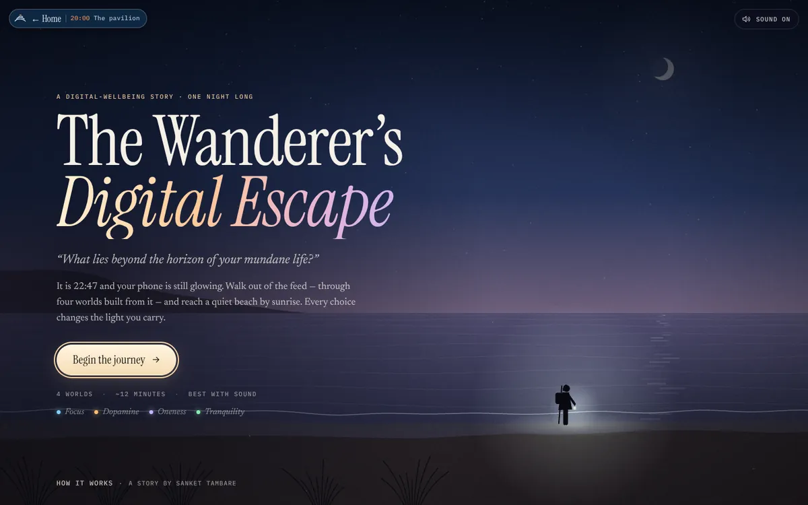
“What lies beyond the horizon of your mundane life?”
The game’s opening question, answered at sunrise: “You just found out.”
No app store, no sign-up and no build step: a static page in this repository, React 18 from a CDN, a canvas landscape, and sound synthesised in the browser.
Inspired by games like Florence, where the gesture is the meaning. Point at a choice and the world leans toward it. Every gesture also works from the buttons and the keyboard.
| Scene | What you do |
|---|---|
| Prologue | Hold to set the phone face down while notifications keep stacking up |
| The reels | Swipe a phone that never stops. The “remembered” counter stays at 0 |
| The candle room | A real 60-second silence: in for four, out for six |
| The Streak Counter | Hold to break day 847 |
| Your five | Type the names of your five people |
| The Last Notification | Tap it, or observe it, untouched, until it passes |
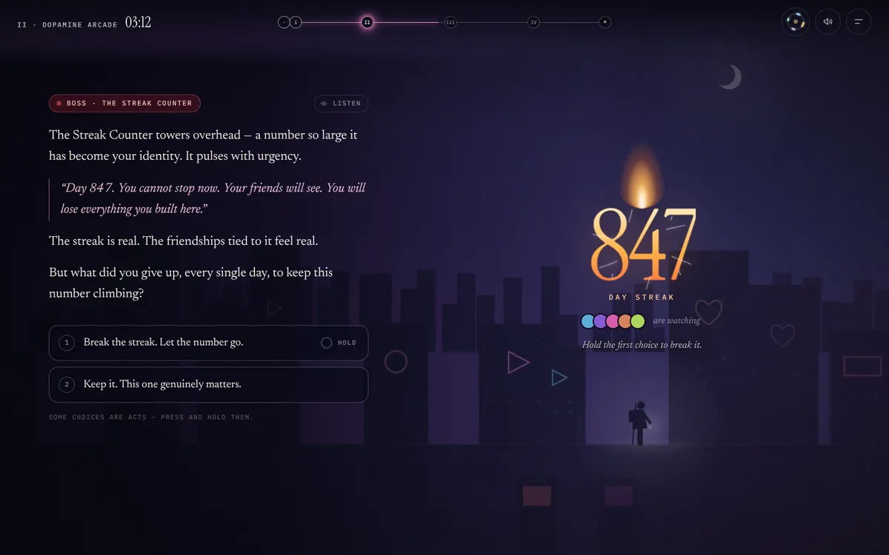
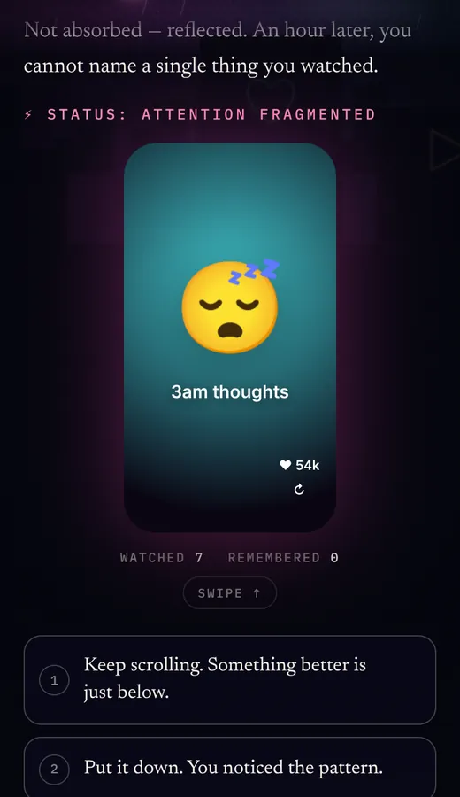
The night is the progress bar. The sky follows the clock in the corner, from midnight blue to first light. Each world opens with a title card and ends with a boss.
| World | Time | What it mirrors | Boss |
|---|---|---|---|
| I · Echo Chamber Swamp | 23:05 | Algorithm bubbles, confirmation bias, endless scrolling | The Algorithm Mirror |
| II · The Dopamine Arcade | 00:48 | Reels, AI slop, sleep loss, notifications, streaks | The Streak Counter |
| III · Validation City | 03:30 | Likes, comparison, Dunbar’s five, deleting the account | The Mirror Wall |
| IV · The Nomad’s Trail | 05:16 | The 5:30am hour, the run, the notebook, the well | The Last Notification |
Where each meter starts. The lantern is the meters made visible: its size and colour follow them, it flares when you choose presence and flickers when Dopamine runs high. Above 75 Dopamine the world drains of colour and glitches at the edges: Ghost Mode.
The ending is a sunrise, then a scroll through where you arrived.
(Focus + Oneness + Tranquility + (100 − Dopamine)) ÷ 4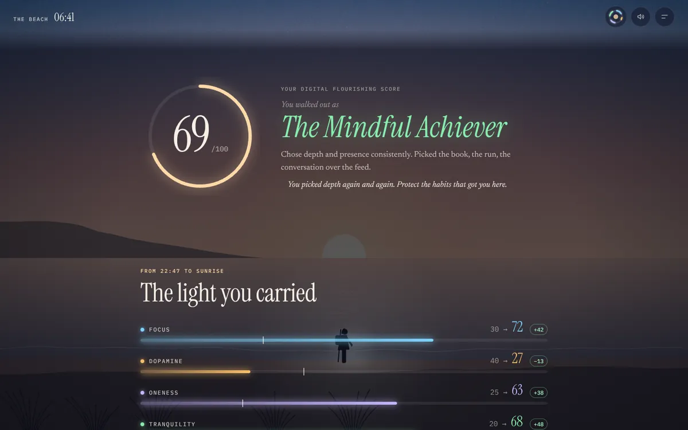
Your five names and your notebook line stay in your browser’s local storage and appear only on your own results. Nothing is sent anywhere.
“This is the story of what happens after you leave the feed: the good parts, the hard parts, and what the research actually says.”
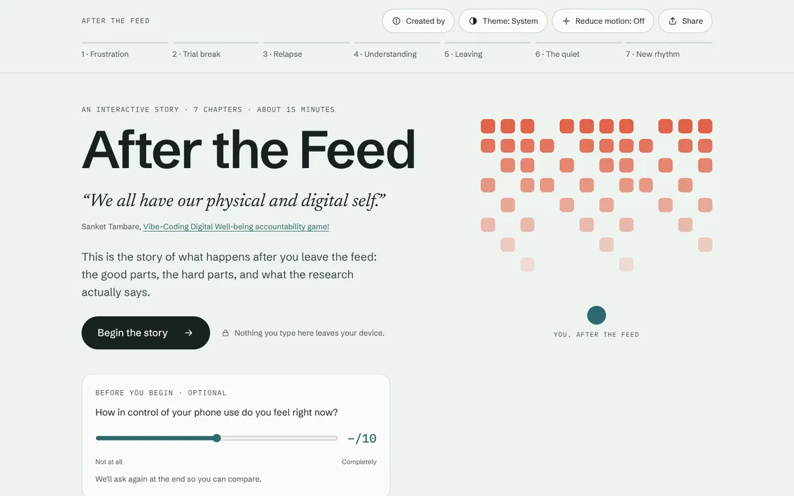
Every chapter keeps the same rhythm, so the reader learns it once: Sanket’s quote, calm narration, one thing to try, what the research says (finding first, caveat one tap away), one small offline act, then next.
One vertical scroll with nothing locked. Progress is shown by stage, never by percentage: seven named segments in the header, from Frustration to New rhythm. /?chapter=3 opens Chapter 3.
Each stage of the arc gets one tactile mechanic, so the reader feels the stage instead of being told about it.
| Chapter | Stage | Try it |
|---|---|---|
| 1 · Everyone Seems Busy | Frustration | Add your ordinary Tuesday to a wall of highlights and watch it get seven seconds on screen |
| 2 · The Quiet Week | Trial break | Switch the feed off and spend the hour you get back. Ten minutes stay unclaimed on purpose |
| 3 · The Pull-Back | Relapse | A feed slides over the story and never finishes. One slip is a lapse; write an if-then plan |
| 4 · Find Your Why | Understanding | Keep the reasons that are true for you: “I want my attention back for…” |
| 5 · The Exit Gauntlet | Leaving | Walk a fictional deletion flow and learn each dark pattern by name |
| 6 · The Desert | The quiet | The page drains to sand. One box keeps an idea that came while you were bored |
| 7 · The Hand-off | New rhythm | Choose Run, Read, Write or Meet, see your first session, add it to your calendar |
“Then you wish to get out for some time by deactivating the account.”
Sanket Tambare, The Road Less Travelled!
Chapter 2’s jar holds the hour a large experiment found people got back. Walk, call, read or sleep, ten minutes at a time; the last ten are carried into the desert in Chapter 6.
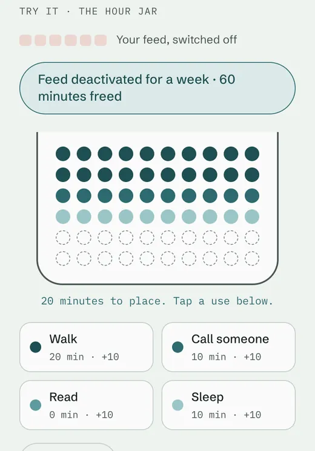
“…first you have to navigate through the UI designed with embedded dark patterns and keeping your urge off for 30 days not to login and then your account is deleted!”
Sanket Tambare, Learnings from the journey: Getting off from the Instagram!
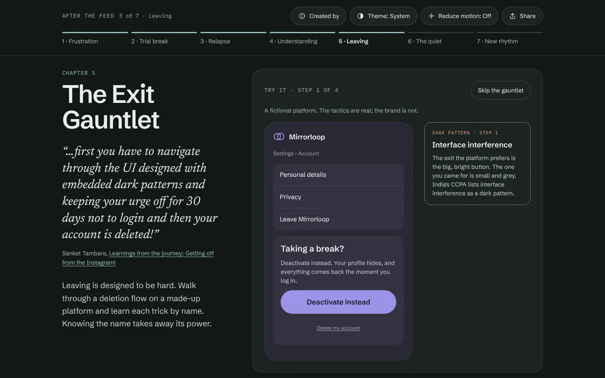
Skip the gauntlet on every step, and both endings are valid: a long break, or delete for good.Every chapter carries one research card: its strength, a big number or phrase, the finding, and the study linked. One tap flips it to the caveat. Small effects are called small.
| Chapter | The card says | Strength |
|---|---|---|
| 1 · Frustration | How, not how much | Correlational |
| 2 · Trial break | ≈ 1 hour a day | Strong · small effect |
| 3 · Relapse | −57% | Moderate |
| 4 · Understanding | ≈ 10 years | Moderate to strong |
| 5 · Leaving | Over 1 in 3 | Strong · descriptive |
| 6 · The quiet | Loneliness: unchanged | Weak to moderate |
| 7 · New rhythm | 66 days | Moderate |
Chapter 2’s caveat, for example: “‘Slightly’ means small. A 2025 review of 10 studies found no average change in happiness or life satisfaction from breaks.”
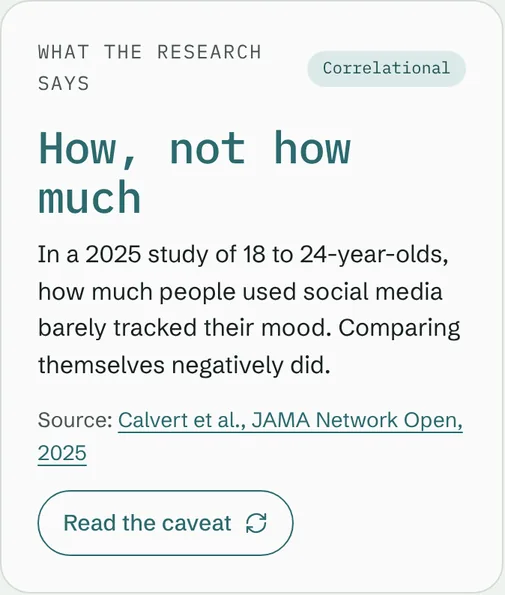
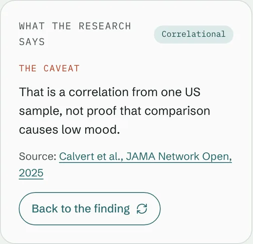
In Chapter 6 the page itself goes quiet: colour fades to sand, the waves flatten, and one box keeps an idea that came while you were bored. A care note stays visible the whole time.
“When you choose to leave this all behind, all these emotional waves suddenly stop and you suddenly feel as if, you are really missing something important sometimes!”
Sanket Tambare, The Road Less Travelled!
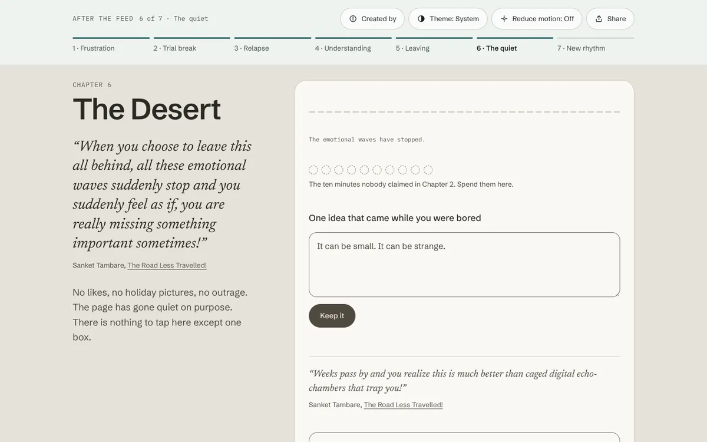
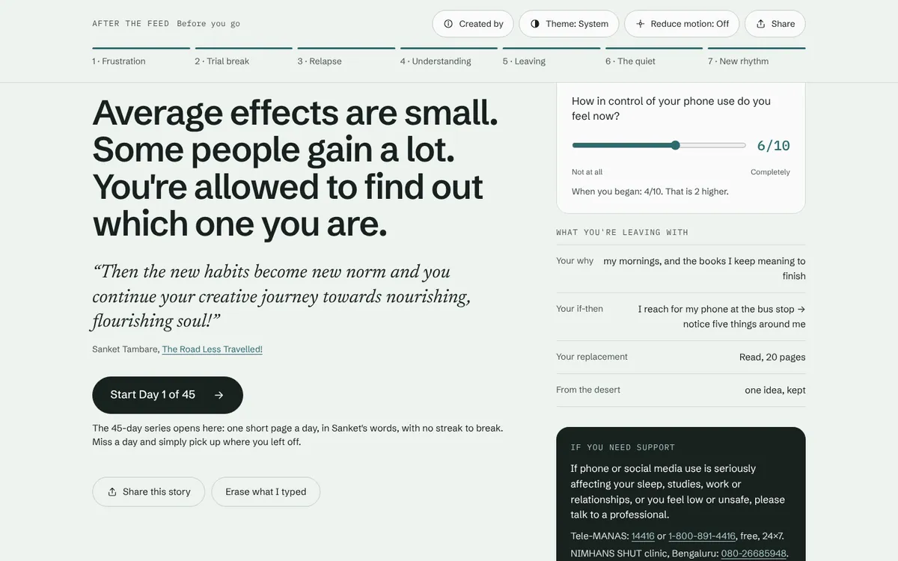
Before you go
The ending repeats the opening’s 0–10 check-in and compares it, shown only to you. Then what you’re leaving with: your why, your if-then plan, your replacement habit and your idea from the desert, in your own words. A real .ics file books your first session; Erase what I typed removes all of it.
Then Start Day 1 of 45 opens the series’ Start page, carrying your why, habit and first start time over in the link’s fragment, never through a server. The series reads them once and clears them from the address bar.
“One short page a day, built on Sanket Tambare’s own lines about leaving social media. Each day gives you his words, what the research says, a small checklist and one thing to do offline.”
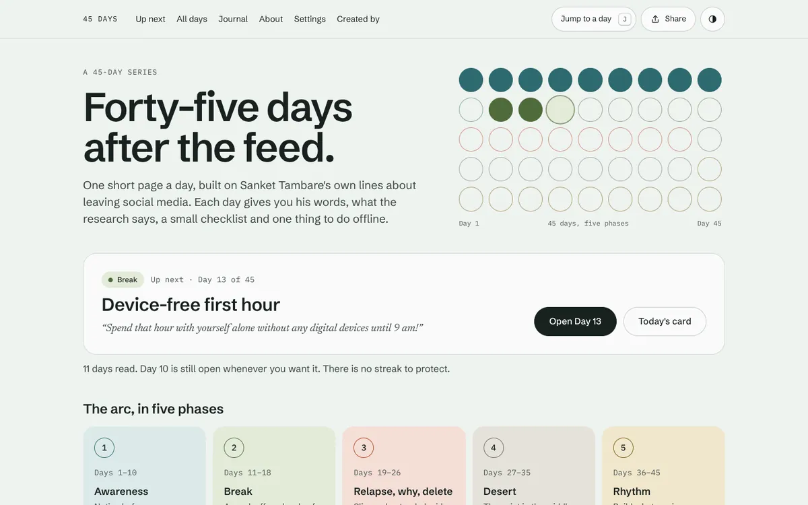
/day/12/ opens Day 12; /next/ opens Up next..ics of 45 daily reminders. Your calendar reminds you; the site never sends notifications.One template renders all 45 days, and the order of the blocks never changes, so you learn the page once. Large Previous and Next buttons name the neighbouring day’s theme.
| Block | What you get |
|---|---|
| His line | Sanket’s exact sentence as the headline, linked to the post it came from |
| The idea | A short explanation, and an extended idea one tap away |
| Today’s checklist | 3–4 small items to tick, remembered on your device |
| Today, offline | One thing to do away from the screen: I did it or Not today, neither of which costs you anything |
| The research | Every claim linked to its study, graded Strong, Moderate, Weak, Contested, Policy or Anecdotal |
| Today’s card | A shareable 1080 × 1080 image of the day, in three styles |
| Your note | A private note box, saved as you type, on this device only |
| Mark as read | Counts the day as read; undo any time |
“One thing is sure, you simply cannot cut-off and keep that block of time of your day empty.”
Sanket Tambare, Learnings from the journey: Getting off from the Instagram! · Day 12
On desktop: ← → previous and next, D mark as read, E extended idea, S today’s card, N your note, J jump to any day, ? the list. Ignored while you type.
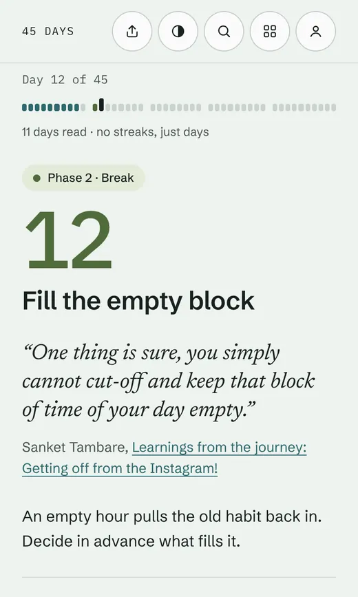
Return after two or more days and Home greets you instead of scolding you: continue where you left off, read Day 22 first, or catch up on what you skipped. After 14 days you can begin again and keep your notes.
“For some reason, the routine breaks for 2-3 days. Now how are you going to restart everything?”
Sanket Tambare, Day 22 · The dilemmas of Maze-runner trapped in daily grind!
The answer: you don’t restart everything. You restart today.
No streak, chain or consecutive-day count. No red zero, no “you lost your progress”, no countdown, no “we miss you”. Missed days are simply open, and nothing is ever locked.
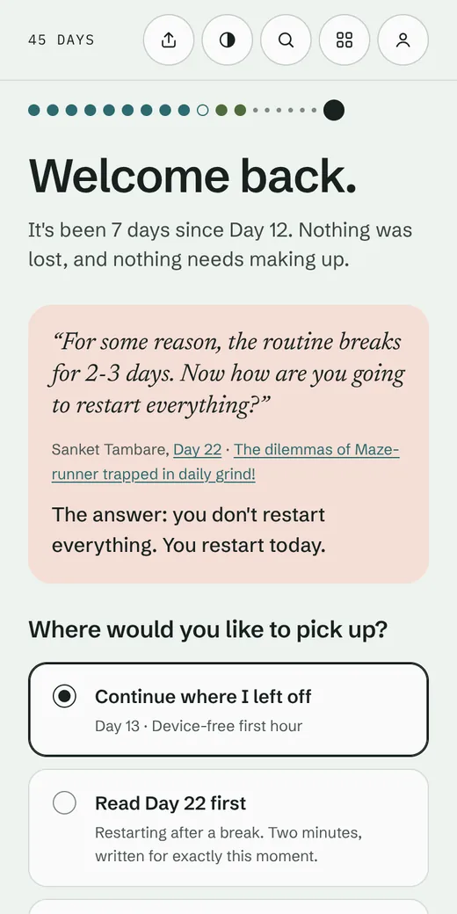
The Journal is for you. The share card is for everyone else, and the two never mix.
Your journal
Notes for every day, newest first, each linking back to its day. Days read, offline actions done, notes written. Check-ins on Days 1, 11, 28 and 45, if you want them: screen time, a 0–10 sense of control and a 0–10 mood, shown only to you as bars, with the note “One person’s numbers, not a study.” Download it as .txt or .json, or erase it with one confirmed tap.
Today’s card
Three styles (Quote, Line, Phase), drawn on your device at 1080 × 1080 with the site’s address. Share the image to an app, save a PNG, or copy the text or link. A card never includes your notes, check-ins, read count or name, and the share options are plain links, so no social network’s code ever loads.
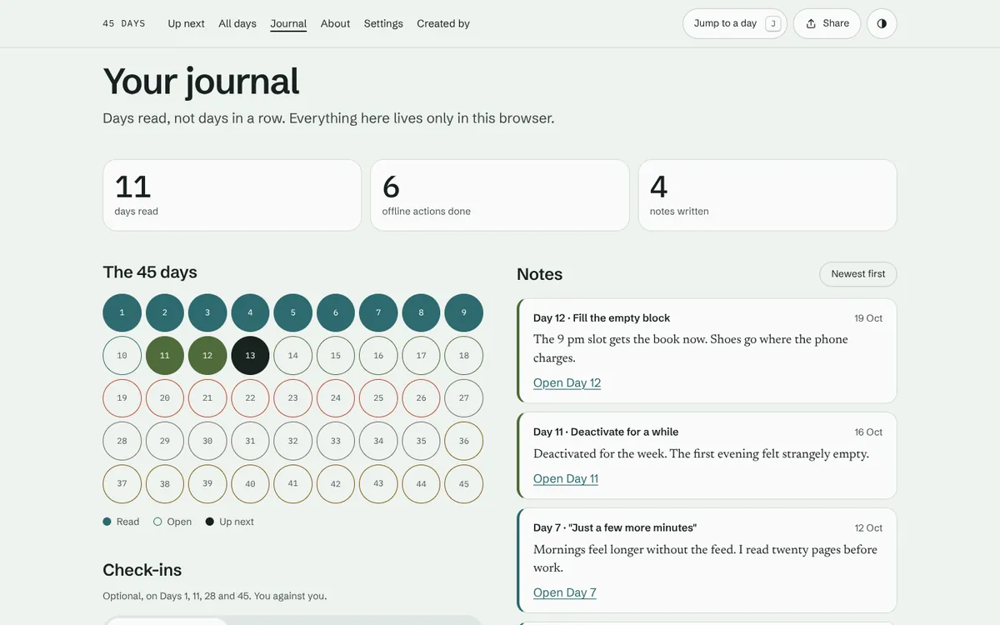
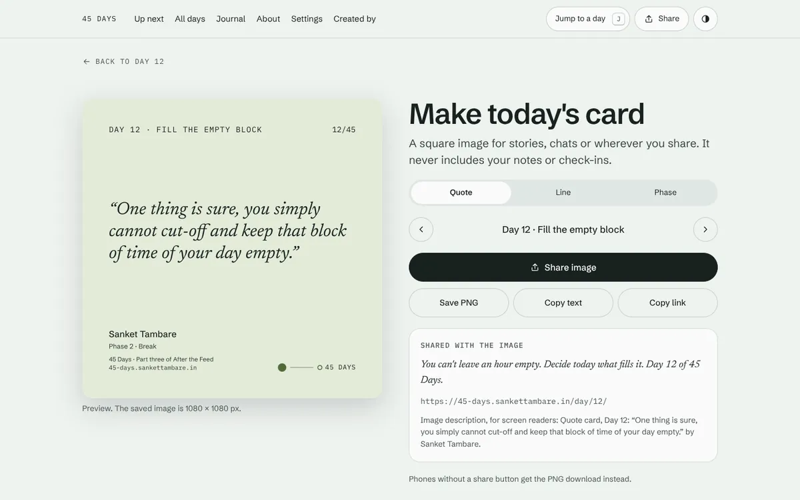
The story and the series share one set of rules, written into their build docs as invariants rather than preferences. The game puts the tricks on stage instead: the Streak Counter is a boss you hold to break.
Days read, never days in a row. Not today is as valid as I did it. No guilt copy outside the labelled parody.
Every finding shows its strength and links its study. Sanket’s own claims are labelled as his observations, never as findings.
Every quote is Sanket’s, word for word, typos aside, and links to its post. Copy lives in data files, never in code.
A route to human help is never collapsed and never behind a tap.
Real buttons and links, visible focus, live regions, keyboard and screen-reader paths, 200% zoom, colour never alone.
Light and dark for every surface, WCAG 2.2 AA in both. Motion uses only transform and opacity, and stops under reduced motion.
A trilogy about the feed can’t quietly feed on its readers. Nothing you type leaves your device: no accounts, no cookies, no analytics, no ads.
| Part | Kept in your browser under | What else loads |
|---|---|---|
| The game | wde.v2 | React and htm from a CDN, pinned with integrity hashes, and fonts from Google Fonts |
| The story | atf.v1 | Nothing. Fonts are self-hosted and a strict Content Security Policy enforces it |
| The 45 days | a45.v1 | Nothing. Same self-hosted fonts, same strict policy |
#from=atf&why=…&habit=…&start=… is a URL fragment, which browsers never send to a server. 45 Days reads it once, stores it, and clears it from the address bar.Every chapter of the story and every page of the series ends with one line. It is never collapsed and never behind a tap:
“Feeling low or unsafe? Please talk to someone. In India, Tele-MANAS is free and open 24×7: 14416.”
The full support block
Tele-MANAS: 14416 or 1-800-891-4416, free, 24×7.
NIMHANS SHUT clinic (Service for Healthy Use of Technology), Bengaluru: 080-26685948.
In an emergency, call 112.
It appears in full on the story’s desert and ending; on the series’ About page, Day 31 and Day 45 complete; and whenever a reader’s check-in shows a very low mood twice in a row, with the line “It’s okay to ask for help. That’s part of the plan.”
Check-ins are reflections shown only to the reader, never diagnoses. Neither site makes medical claims: “people in one study reported…”, never “this will reduce your anxiety”.
The game · in this repo
React 18.3.1 and htm from a CDN with integrity hashes, a canvas world drawn and lit by the clock, and every sound synthesised with the Web Audio API, with no audio files. About 5,000 lines across six files, no build step.
The story and the series
Astro 7.3.5 on Cloudflare Pages; every push to main deploys. Every word a reader sees or hears lives in src/data/en/ as JSON, the series one file per day, so changing copy never touches code.
check:content (post keys, 3–4 checklist items, share lines of 20 words or fewer), check:copy for text that sneaks into a template, check:contrast for both themes, and check:size budgets of 300 KB and 280 KB for a first load.Start with whichever fits the time you have. Each part points to the next, and none of them will hold it against you if you stop.
Words by Sanket Tambare, from 13 posts on The Wanderer’s Technical Anecdotes. Every finding sits beside its study and its caveat.
Intentionally created by Sanket Tambare❤️